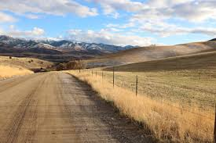

Visit Scenic Preston
by Drew Parkinson
Preston has beautiful winding country roads that meander through the hillsides. In the autumn, you can catch the changing leaf colors. In the winter you can enjoy the slopes. A walk through the splendid fall leaves of Preston will certainly bring some pink to your cheeks! Take time this weekend to explore the great outdoors with friends and family. Be sure to stop by the Preston Farmers Market. In December the market will switch to a Christmas market featuring wares from vendors state-wide.